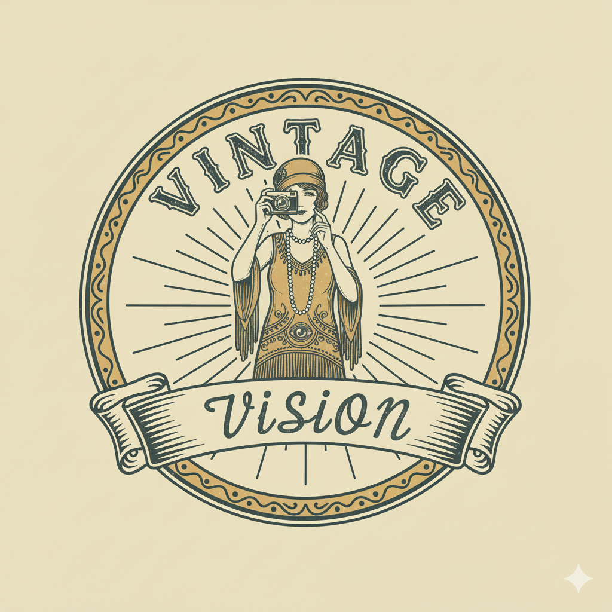

About VintageVision
VintageVision is an AI-powered platform that analyzes any photo to recognize outfits and recommend similar clothing from modern stores. Our mission is to help people rediscover style — whether it’s inspired by a vintage look, a streetwear snapshot, or your favorite influencer’s post.
What We Do
Upload a photo — from an old portrait to a picture you just took — and VintageVision identifies the key clothing pieces in it. Our AI detects items like jackets, skirts, or accessories and then finds modern, shoppable equivalents from today’s fashion brands. Whether you’re exploring trends, recreating timeless looks, or finding your next outfit idea, VintageVision makes visual fashion search simple.Our Technology Our computer vision models are trained on diverse fashion datasets that span decades of style. Using deep learning, the platform recognizes patterns, textures, and silhouettes, providing accurate clothing matches in seconds. Behind the scenes, we combine AI precision with a deep appreciation for fashion history — connecting the past and present in one effortless experience.
Our Team We’re a small but passionate team of engineers, designers, and fashion enthusiasts. Together, we’re reimagining how people discover clothing — with technology that understands both style and individuality. Person A– Founder & CEO Person B– Lead Engineer Person C– Full Stack Developer
Our Vision At VintageVision, we believe style is timeless. By combining artificial intelligence with creative design, we help people express themselves — and make fashion discovery more intelligent, inclusive, and fun.